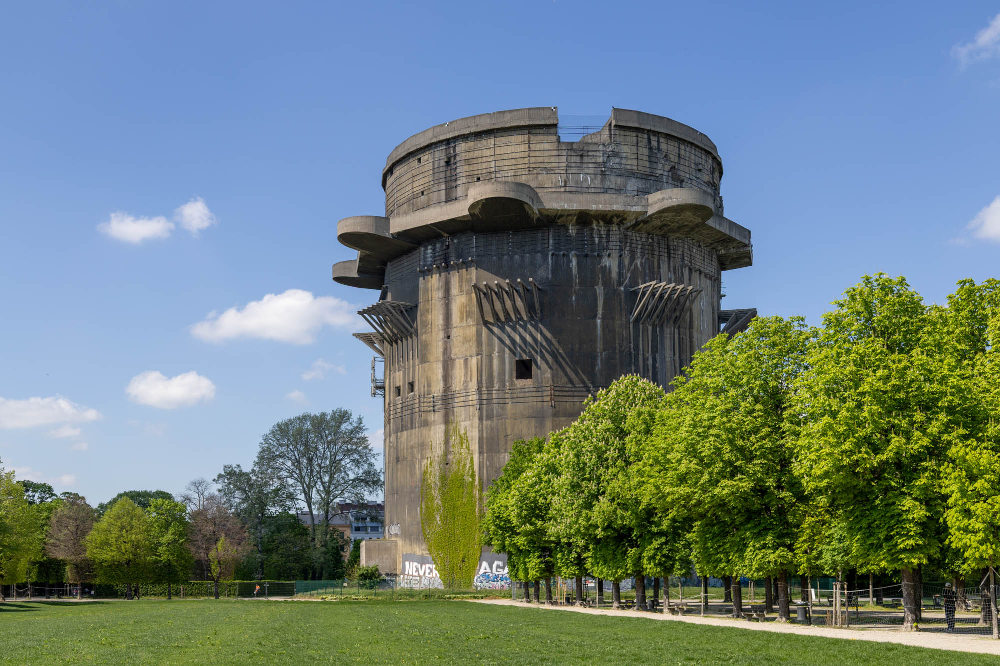
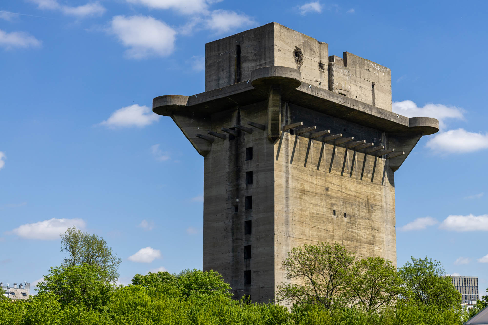

Three pairs of flak towers, arranged in a triangular formation centred around St. Stephen's Cathedral, were constructed beginning in 1940 to defend Vienna from RAF bombing raids. All six towers still stand today, eight decades after the end of World War II. While some have found new uses, others remain unoccupied and abandoned.
G-Tower (Gefechtsturm / Combat Tower)
Located in Augarten, this third-generation flak tower once held eight 128mm guns and thirty-two 20mm guns. Today it sits empty, with steel cables reinforcing the structure to help keep deterioration at bay.

L-Tower (Leitturm / Lead Tower)
A few hundred metres from the G-Tower is its counterpart in Augarten. This secondary tower functioned as the command and fire-control centre, equipped with radar systems and additional smaller flak guns.
